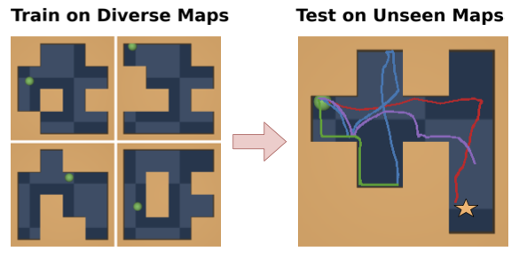
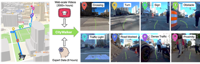
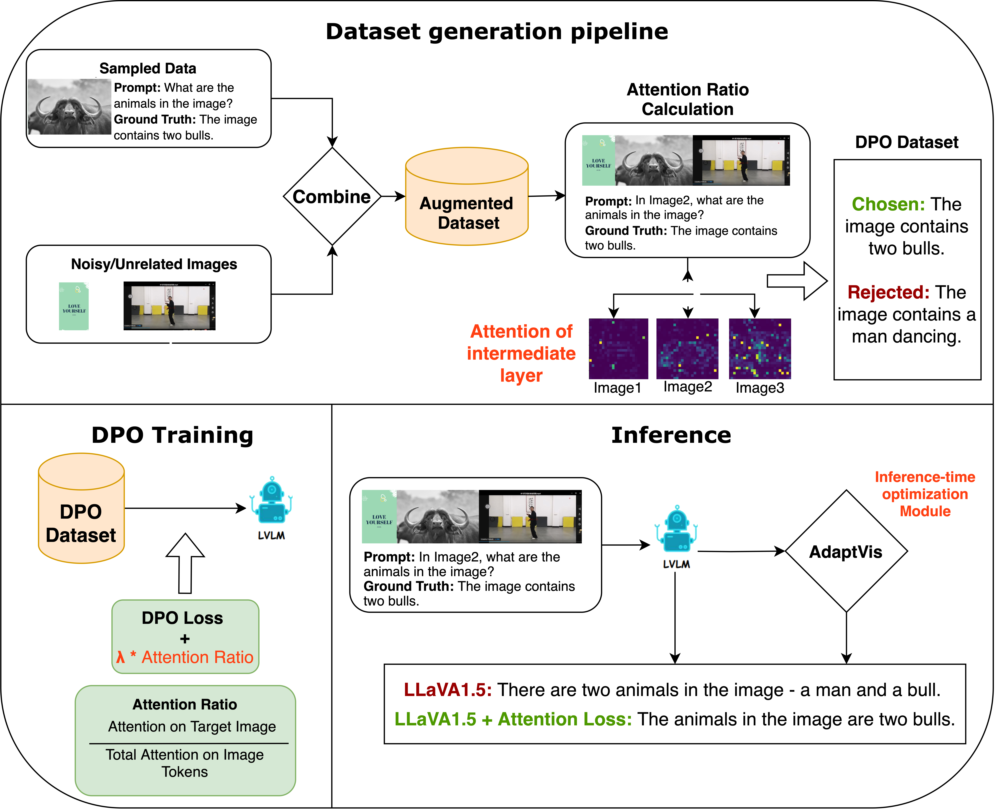
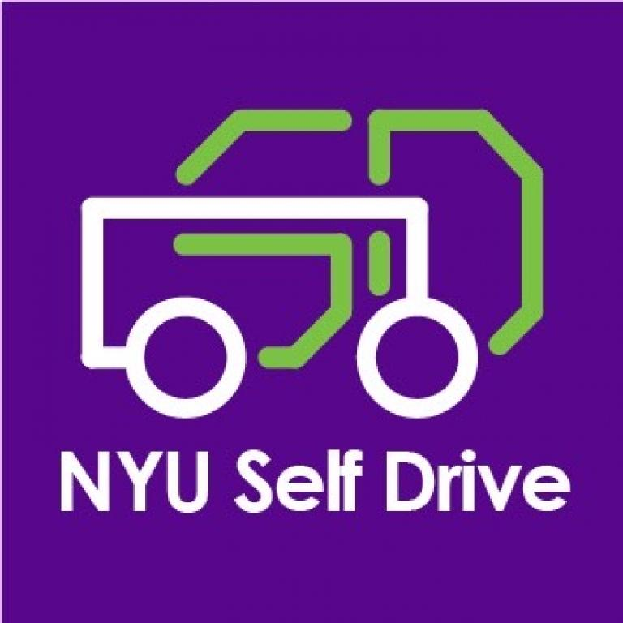
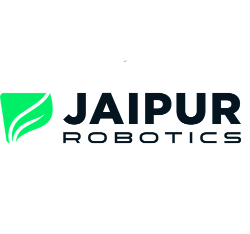
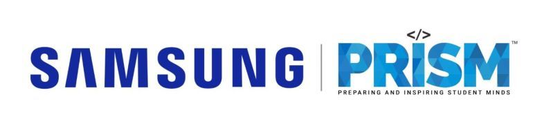

|
Harsh Sutaria
I'm a Computer Science graduate student at NYU and Graduate Researcher under Prof. Yann LeCun at CILVR Lab, researching Planning with Latent Dynamics Models and Hierarchical JEPA World Models. I also work on collision-aware navigation using Depth Barrier Regularization at AI4CE Lab under Prof. Chen Feng.
Achievements: 3rd place in NYU Deep Learning Challenge (Prof. LeCun) • NASA-JHU Lunar Autonomy Challenge participant
Experience: Research Intern at Samsung PRISM • Deep Learning Engineer at Jaipur Robotics • Tech Lead at NYU Self-Drive
Impact: Sub-5ms AR latency with PointNet++ optimization • 11% improvement in voice recognition (78% → 89%) • 30% improvement in visual place recognition • 75% productivity boost for 20+ users
Open to ML Engineering, Computer Vision, Robotics, Autonomous Systems as well as Software Development Engineer (SDE) roles. Seeking Spring 2026 internships and full-time opportunities.
Email /
CV /
LinkedIn /
Github /
LeetCode
|
|
Research
My research focuses on Representation Learning, World Modeling, and Planning using state-of-the-art deep learning techniques. Current work includes Planning with Latent Dynamics Models, Hierarchical JEPA architectures, collision-aware navigation with Depth Barrier Regularization, and multi-modal AI systems. Tech stack: PyTorch, TensorFlow, Computer Vision (YOLO, DINOv2, VLAD-BuFF), Diffusion Models, ROS.
|
|

|
Planning with Latent Dynamics Models
Harsh Sutaria, advised by Prof. Yann LeCun
Graduate Research, Jan 2025 - Present
demo video
Extending PLDM to solve complex tasks by training a hierarchical JEPA world model. Implemented Transformer with Markov assumption as predictor, trained using teacher forcing with VICReg regularization to prevent representation collapse. Optimal control (MPC) planning on the latent dynamics model shows best generalization to new tasks. Collaborating with PhD candidate Kevin Zhang and PhD Vlad Sobal at CILVR Lab.
|
|

|
Depth Barrier Regularization for Collision Aware Egocentric Navigation
Harsh Sutaria, advised by Prof. Chen Feng
Graduate Research, Sep 2025 - Present
CityWalker project
Building on CityWalker for collision-aware urban navigation using depth barrier regularization. Developing differentiable safety constraints from monocular depth to prevent steering into obstacles while preserving data-driven policy performance. Co-mentored by postdoc Jing Zhang and PhD candidate Xinhao Liu at AI4CE Lab.
|
|

|
Attention-Aware DPO for Reducing Hallucinations in Multi-Image QA
Harsh Sutaria
Research Project, Nov 2024
report
Engineered DPO loss incorporating cross attention penalties to reduce hallucinations in multi image QA for Large Vision Language Models (LVLMs), improving target image focus by 33.93% (vs. 29.43% baseline). Performed inference time optimization by confidence based attention scaling, boosting accuracy by 10%. Trained on LLaVA665k augmented datasets using LoRA fine-tuning.
|
Professional Experience
My professional experience spans research internships, industry engineering roles, and research leadership positions across diverse domains. From real-time AR systems at Samsung PRISM to IoT voice recognition at Whitelion, production ML systems at Jaipur Robotics, and autonomous navigation leadership at NYU. I've consistently delivered solutions that improve performance metrics and reduce manual work through AI innovation.
|
|

|
Student Leader - NYU Self Drive | AI4CE Lab
Harsh Sutaria
Vertically Integrated Project, Sep 2024 - Present
project page
Led the team to develop autonomous navigation with world models as visual inertial state estimators for localization and controls. Built visual place recognition using YOLO, DINOv2 and VLAD-BuFF to improve image matching by 30%. Participated at the joint competition by NASA & Johns Hopkins University's Lunar Autonomy Challenge.
|
|

|
Deep Learning Engineer - Jaipur Robotics Sagl
Harsh Sutaria
Full-time Role, Apr 2023 - Jul 2024
company info
Performed image classification and segmentation by fine-tuning YOLO and CLIP for downstream tasks. Used Segment Anything and LabelStudio to create datasets resulting in reduction of human work by 60%. Created resilient backend architectures by containerizing applications with Docker and Google Cloud Platform. Developed Generative Fashion Design Agent using SDXL diffusion model with LoRA and VAE to generate textile patterns, serving 20+ daily active users and boosting productivity by 75%.
|
|

|
Research Intern - Samsung PRISM
Harsh Sutaria
Research Internship, Jul 2023 - Dec 2023
Project: Real-Time Multi-Stream Synchronization | Mentors: Prasenjit Chakraborty, Umadevi K.S (VIT Vellore)
Developed real-time augmented reality (AR) systems by fusing 3D sensor data with optimized PointNet++ and lightweight 3D CNNs achieving sub-5ms latency. Implemented seamless sensor data fusion using CRNNs and multi-task learning for swift AR interactions with GPU/TPU acceleration. Built production-ready AR pipeline for instant multi-stream synchronization in mobile environments.
|
|
|
Software Engineer Intern - Whitelion
Harsh Sutaria
Software Engineering Internship, May 2022 - Aug 2022
company info
Designed and developed software modules for voice recognition in smart switch systems, improving recognition accuracy from 78% to 89%. Integrated NLP capabilities using spaCy to enhance user-device interaction through natural language commands. Built and optimized data processing pipelines for motion and TV sensor data using TensorFlow and scikit-learn, contributing to intelligent energy management features. Delivered robust real-time functionality in embedded environments through system integration and performance optimization.
|
|
{kind=link}